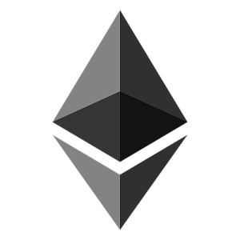

Known to be the first ever cryptocurrency which started it all. It was developed by a person, or a group of people, it is still unknown that uses the pseudonym Satoshi Nakamoto in 2008. The Bitcoin is a decentralized digital cash which means it uses peer to peer network instead of a centralized database. All transactions are verified at nodes using cryptography and recorded in public distributed ledger known as blockchain. Bitcoins are created by a process called mining, a process of validation of transactions by solving cryptographic hash algorithms such as SHA-256 or Scrypt. Bitcoin is the most popular and widely used cryptocurrency with the highest value of $19,783.21 on December 2017.
It is a Turing-complete programmable currency that means it allows developers to build different applications. And hence it is more preferred in the business world. Smart contracts a feature of this cryptocurrency which attracted many corporations. It is basically a computer algorithm which automatically fulfils the contract terms as soon as conditions are met. Ethereum appeared in the market in 2015 and its creator is Vitalik Buterin. Ethereum is a host of several tokens like Ethereum Classic, DigixDAO, Augur and hence it's more like a family of cryptocurrencies.
Introduced in 2012 by Arthur Britto, Ryan Fugger and David Schwartz. Ripple is built on distributed open source internet protocol. It uses iterative consensus process which makes it faster than Bitcoin and it is being used by various organizations for its ability to do secure global transactions of any size, without any fees and very quickly. Its native cryptocurrency XPR (ripples) which is created by Ripple Network Company, is the third largest coin by market capitalization. As most of the ripples are pre-mined, it is criticized by online communities.
Charles Lee, former Google employee presented Litecoin in 2011, known as the "Digital Silver" compared to Bitcoin as "Digital Gold". Faster than Bitcoin, it can generate blocks four times faster and have four times the maximum amount of coins i.e. 84 million. Due to its larger amount of coins and new mining algorithms, Litecoin is widely used for quick payments all over the world. Mostly, Litecoin is treated as a younger brother of Bitcoin and now just a backup if Bitcoin fails.

It is the most prominent example of cryptonight algorithm which focuses on privacy. It was Introduced in 2014. Every transaction made in the Bitcoin is recorded in the Blockchain and it can be traced back. After the concept of ring-signatures, the algorithm was able to cut through the chain, providing a privacy to all the transactions on the blockchain. Monero is a non-pre-mined cryptocurrency and it became popular in Summer 2016.
There are hundreds of such Cryptocurrencies in the market constantly competing with each other, and they will keep on growing.